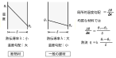

2022年
問題46 熱移動に関する次の記述のうち，最も不適当なものはどれか．
（1）中空層の熱抵抗は，一定の厚さ(2～5cm)までは厚さが増すにつれて増大するが，それ以上ではほぼ一定となる．
（2）固体内の熱流は，局所的な温度勾配に熱伝導率を乗じて求められる．
（3）密度が大きい材料ほど，一般に熱伝導率は小さくなる．
（4）同一材料でも，一般に熱伝導率は温度によって異なる．
（5）同一材料でも，一般に内部に湿気を多く含むほど熱伝導率は大きくなる．
2022年
問題46 正解（3） 頻出度AAA
密度が大きい材料ほど，一般に熱伝導率は大きくなる（2022-46-1表参照）．
2022-46-1表 主な建材などの熱伝導率と密度
| 材料 | 熱伝導率［W/(m･K)］ | 密度［kg/m］3 |
| 鋼材 | 45 | 7,860 |
| アルミニウム | 210 | 2,700 |
| 板ガラス | 0.78 | 2,540 |
| タイル | 1.3 | 2,400 |
| コンクリート | 1.3 | 2,400 |
| 石こう板 | 0.14 | 710～1,110 |
| パーティクルボード | 0.15 | 400～700 |
| 木材 | 0.15 | 550 |
| 硬質ウレタンフォーム | 0.027 | 25～50 |
| ガラス繊維 | 0.04～0.05 | 20～50 |
| 空気 | 0.022 | 1.3 |
| 水 | 0.6 | 1 |
「熱伝導率」と「密度」の関係について
熱とはつまるところ，物質を構成する原子・分子さらには電子の振動に還元されるので，それらが多い，別の言葉で言えば原子・分子間の距離が近い，すなわち密度の高い物質ほど熱を伝えやすく，同じ理由で水分を多く含むほど熱伝導率は大きくなる．
金属にあっては，密度よりも金属内を自由に動き回る電子（自由電子）の数が熱伝導率に大きく寄与するので，電気伝導率の大きい（=電気抵抗の小さい）金属は熱伝導率も大きい．
物質の温度が高くなると原子・分子・電子の振動の振幅が大きくなる．一般の物質では熱伝導率は大きくなるが，金属では原子核の振動が自由電子の動きを邪魔するようになって熱伝導率，電気伝導率とも小さくなる．
-(1) 熱抵抗とは，熱の伝えにくさを表す値で，二重ガラスや壁内の空気層などの中空層の熱貫流抵抗 \(R\) [m2･K/W]は，熱の伝導・放射・対流が絡んで，中空層の厚さ，密閉度，熱流の方向の影響を受け，一定の厚さまで熱抵抗は増加するがそれ以上ではほぼ一定となる．
住宅建築の業界団体では，空気層の熱流方向の厚さ\(d\)が1cm未満の場合は\(R=0.9d\)，\(d\)が1cm以上の場合は一定値\(R=0.09\)を用いて計算するとしている．
改めて熱伝導率と熱抵抗の意味を2022-46-2表にまとめた．
| 名称 | 意味 | 単位 |
| 熱伝導率 | 厚さ1mの物質の両面に温度差が 1kあるとき，1m2の断面を1秒間に通過する熱量．物質固有の熱の伝えやすさを表す． | W/(m･K) |
| 熱抵抗
熱伝導抵抗 |
任意の2点間の温度差を，2点間を流れる熱流量（1m2の断面を1秒間に通過する熱量）で割った値．物体・空間の熱の流れにくさを表す．
物体にあっては，熱伝導抵抗ともいう．熱伝導抵抗＝材料の厚さ÷材料の熱伝導率． |
m²･K/W |
-(2) 固体内は伝導によって熱は伝わり，固体内を流れる熱流 \(q\)［W/m2］は，次式の通り局所的な温度勾配 \( \displaystyle \frac{d \theta}{dx} \) [℃/m]に熱伝導率 \(\lambda\)［W/(m･K)］を乗じて求められる．負号（－）は，温度が低下する向きに熱が流れることを示している． \[q=-\lambda \frac{d\theta}{dx}\]
個体（厚さ \(\delta\)［m］）が均質で定常状態のとき，個体内部の温度勾配は直線となり，その場合の熱流 \(q\)は次式で表される． \[q=-\lambda \frac{(\theta_1-\theta_2)}{\delta}\]
温度勾配は，熱伝導率が小さい，断熱材のような個体では大きくなる（2022-46-1図参照）．
2022-46-1図 熱伝導率と温度勾配
